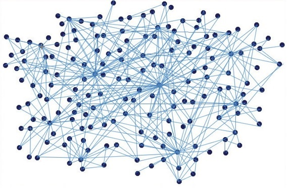

Es un algoritmo que nos permite encontrar el camino minimo en un grafo, dado un vertice
de origen hacia el resto de los vertices del grafo. Debe su nombre al cómputologo Edsger
Dijkstra que lo describió en 1959.
Supongamos que tenemos un grafo de N nodos no aislados.
Sea X el nodo inicial.
Un vector D de tamaño N guardara las distancias desde X hacia el resto de los nodos.
1. Se inicializan todas las distancias a un valor infinito relativo, ya que no es posible calcularlas,
exceptuando a X, cuya distancia es cero, debido a que la distancia de X a X es 0.
2. Sea A = X (se tomará a como nodo inicial).
3. Se recorren todos los nodos adyacentes a A.
4. Se calcula la distancia desde el nodo A hacia sus adyacentes, guardando en D las menores.
5. Se termina con el nodo A.
6. Se toma como proximo nodo actual el menor valor de D y se regresa al paso tres mientras existan
nodos no terminados.

Demostración del Algortimo de Dijkstra